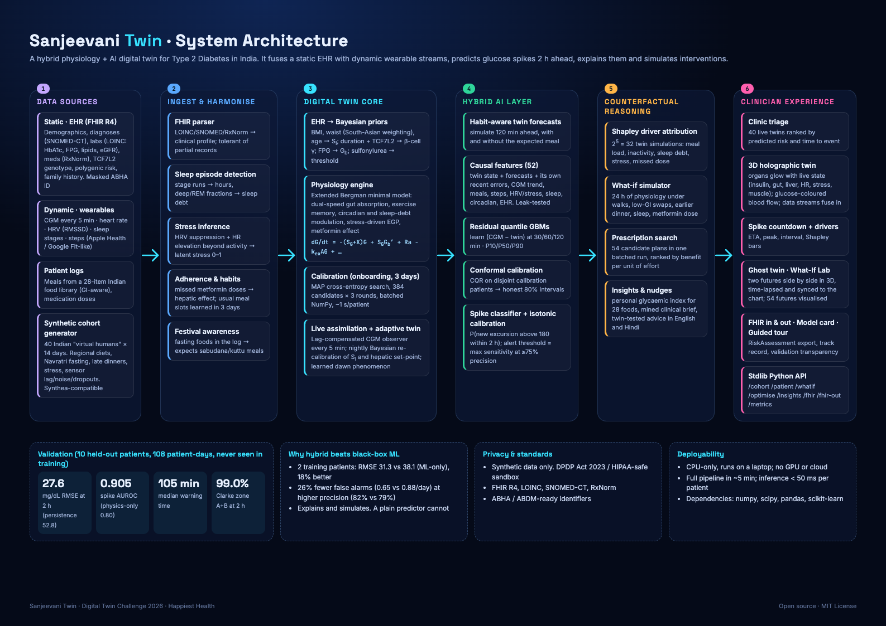
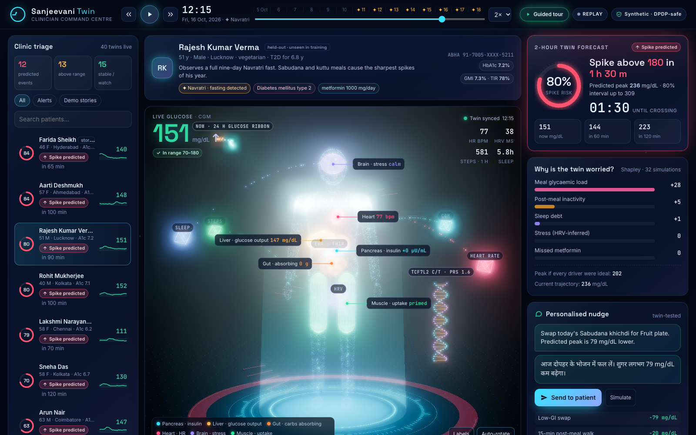
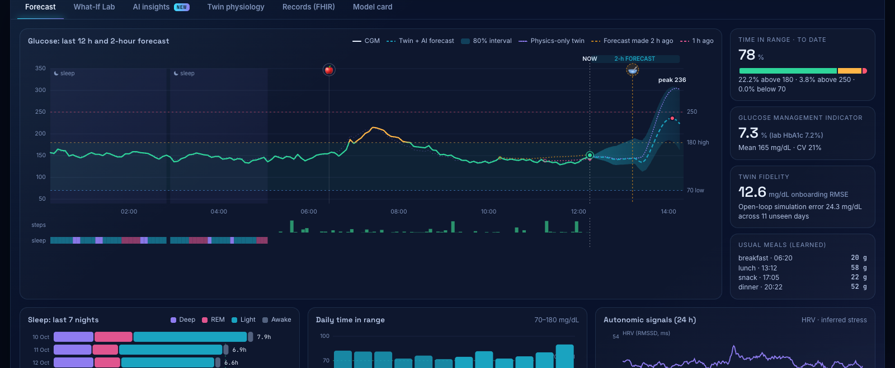
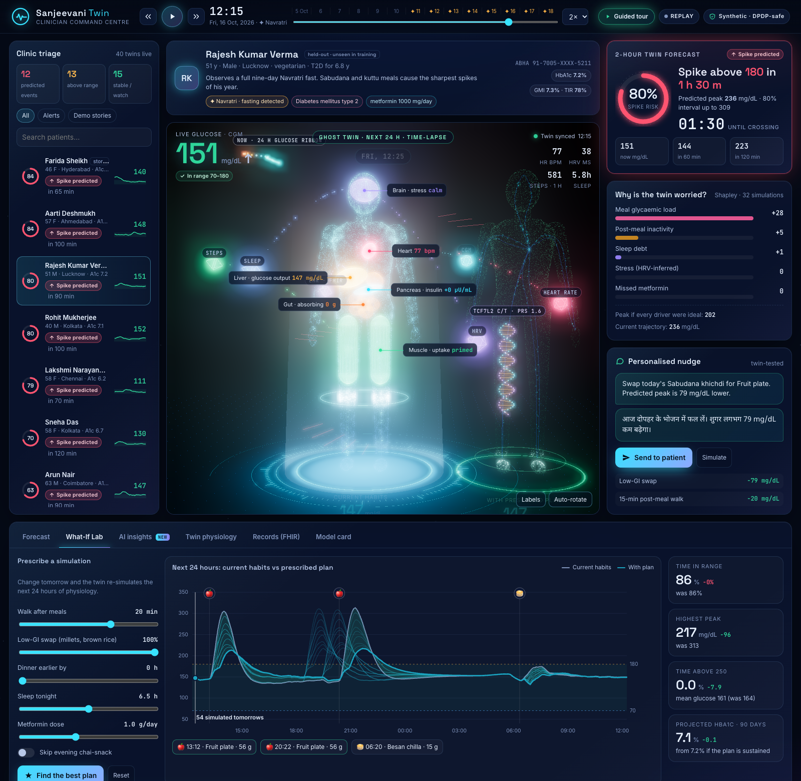
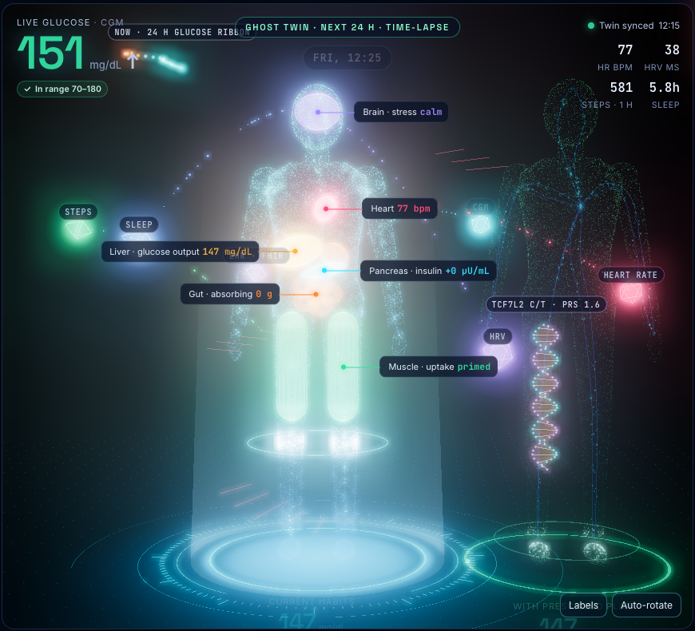
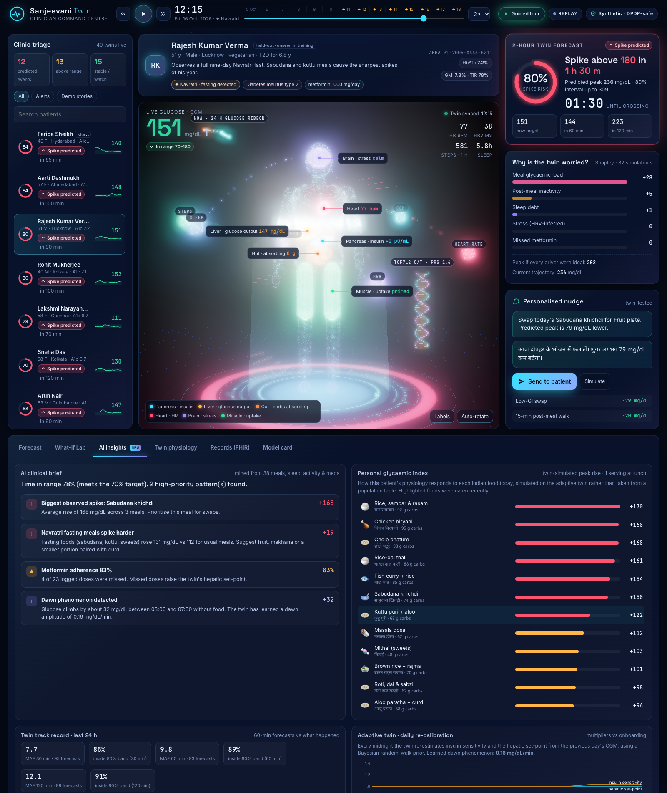

Sanjeevani answers this for every patient, continuously, from data a clinic already has or can get cheaply.
FHIR R4: labs, diagnoses, meds, TCF7L2 genotype, PRS
CGM · HR · HRV · sleep stages · steps · meal and med logs
ODE model of glucose, insulin, gut, exercise, circadian, sleep, stress. Calibrated per patient, synced every 5 min
Learns what physics misses. Conformal intervals and spike risk
Glucose at 30/60/120 min with 80% intervals. Spike-above-180 risk and countdown.
Exact Shapley attribution over 32 counterfactual twin runs: meal, inactivity, sleep debt, stress, missed dose.
The doctor prescribes a plan and the twin simulates tomorrow. 54 candidate plans are searched in one batched run.

| Recovered parameter | r prior | r twin |
|---|---|---|
| Insulin sensitivity SI | 0.76 | 0.89 |
| Beta-cell responsiveness γ | 0.65 | 0.83 |
| Basal glucose Gb | 0.86 | 0.98 |
Pearson correlation with the hidden ground truth across 40 patients. Median onboarding fit 17.3 mg/dL; open-loop simulation error 21.9 mg/dL over 11 unseen days. The twin also learns each patient's dawn phenomenon and re-calibrates itself every night (adaptive twin).
mg/dL RMSE at 2 h, 48% lower than persistence
AUROC: new spike above 180 within 2 h · calibrated (ECE 0.06)
median warning time before a real excursion
Clarke error grid zone A+B at 2 h
| Model | RMSE 30 min | 60 min | 120 min | Spike AUROC | False alerts/day |
|---|---|---|---|---|---|
| Persistence | 26.6 | 42.6 | 52.8 | — | — |
| Linear trend | 31.2 | 62.3 | 101.3 | 0.546 | — |
| Physics twin only | 16.8 | 29.6 | 34.4 | 0.801 | 0.85 |
| ML only (no twin) | 15.0 | 24.1 | 28.1 | 0.896 | 0.88 |
| Sanjeevani hybrid | 13.7 | 22.9 | 27.6 | 0.905 | 0.65 |
2-h RMSE 31.3 vs 38.1 mg/dL for ML-only. The physics twin alone scores 34.4 with zero training patients, so it can start at a new clinic on day one.
0.65 vs 0.88 per patient-day under the same alert policy, with higher precision (82% vs 79%). Alert fatigue is what kills clinical tools.
Permutation importance: removing the twin's forecasts drops AUROC by 0.154, about 8× more than any wearable group alone.
Prediction intervals use conformalized quantile regression on disjoint calibration patients (76–78% observed coverage for a nominal 80%). Spike probabilities are isotonic-calibrated. A unit test proves features never use data from after the prediction time.





Triage 40 patients at a glance, ranked by predicted risk and time to event. Spend minutes where they matter.
Small, specific, twin-tested nudges in Hindi and English, tuned for thalis, festivals and late dinners.
FHIR R4 and ABHA-ready for the Ayushman Bharat Digital Mission. Runs on CPU with no GPU, so it suits low-resource settings.